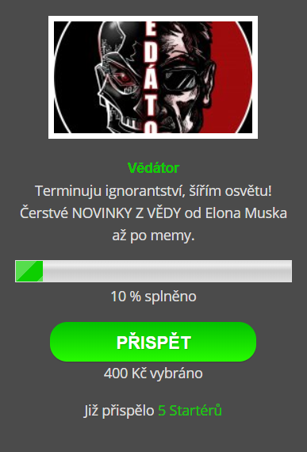

CC BY-SA 4.0
Widget pro zobrazení Startovač projektu na vlastním webu
V podstatě obdoba takového okénka od Startovače https://www.startovac.cz/novinky/detail/1222/ jen bez toho iframe, document.write() a dalších nepěkných věcí.
Jak na to?
Potřebný je tu jediný soubor a to startovacWidgetic.mjs. Ten vložit do stránky a spustit takto nějak:
<div id="startovac-canvas" hidden></div>
<script type="module" src="/startovacWidgetic.mjs" crossorigin="anonymous" integrity="sha256-q73cHpbcf4e0R62wubmMCMLnjEpumk/09G1aTxFuRxs="></script>
<script type="module">
import { StartovacWidgetic } from '/startovacWidgetic.mjs';
const projectURL = new URL( 'https://www.startovac.cz/patron/vedator/' ); // váš projekt na Startovači
const sandboxElement = document.getElementById('startovac-canvas'); // kam se to vykreslí
new StartovacWidgetic( projectURL, sandboxElement );
</script>
Není celý kód <script type="module" src="/startovacWidgetic.mjs" crossorigin="anonymous" integrity="sha256-q73cHpbcf4e0R62wubmMCMLnjEpumk/09G1aTxFuRxs="></script> zbytečný, fungovalo by to i bez něj. Jops, fungovalo, ale nešlo by bez něj zajistit kontrolu integrity javascriptového modulu. Bezpečnost je důležitá, pokud vás zajímá o bezpečnosti modulů více, čtěte zde: https://iiic.dev/subresource-integrity-check-u-javascriptovych-modulu
minimalistický příklad použití s nastavením je v souboru example-usage.html a příklad jak by mohly vypadat styly v souboru example.css.
Nastavení
Je možné provést 3. parametrem konstruktoru. To, jak vypadá objekt s nastavením (settings) uvidíte ve třídě StartovacWidgeticPrivate.
Možné problémy?
mjs přípona musí mít nastavený správný mime type a to text/javascript, pokud je to moc pracné přejmenujte koncovku z .mjs na .js . Více o modulech na https://www.vzhurudolu.cz/prirucka/js-moduly
API přístupové body pro CSP
Pro nezbytnou funkci widgetu je potřeba komunikovat s doménou startovac.cz . Restriktivní CSP tedy například takto: connect-src https://www.startovac.cz/ a img-src https://www.startovac.cz/cache/images/ pokud zobrazujete obrázek.
Licence
CC BY-SA 4.0
This work is licensed under the Creative Commons Attribution-ShareAlike 4.0 International License. To view a copy of this license, visit http://creativecommons.org/licenses/by-sa/4.0/ or send a letter to Creative Commons, PO Box 1866, Mountain View, CA 94042, USA.
Github repo: https://github.com/iiic/StartovacWidgetic
Živá ukázka
kód vypadá následovně
import { StartovacWidgetic } from '/js/modules/startovacWidgetic.mjs';
const projectURL = new URL( 'https://www.startovac.cz/patron/vedator/' );
const config = {
structure: [
'picture',
'br',
'title',
'br',
'br',
'meter',
'percentText',
'countdownText',
'supportLink',
'moneyCollected',
'nSupporters',
],
texts: {
support: '\u{1f431}přispět\u{1f431}',
},
};
new StartovacWidgetic( projectURL, null, config );
No a co to dělá?
Vlastní sestavení HTML elementů, ve kterém není popisek projektu, a na místo něj je dvojnásobné odřádkování. Dále pak specialitka a to kolem tlačítka přispět je kočičku, není problém vše se dá udělat, jak ukazuje vlastní text na tlačítku přispět, kde \u{1f431} je do javascriptu escapovaný unicode znak kočky. Máte další nápady co s tím? Dejte mi vědět, nebo rovnou na Githubu založte issue.